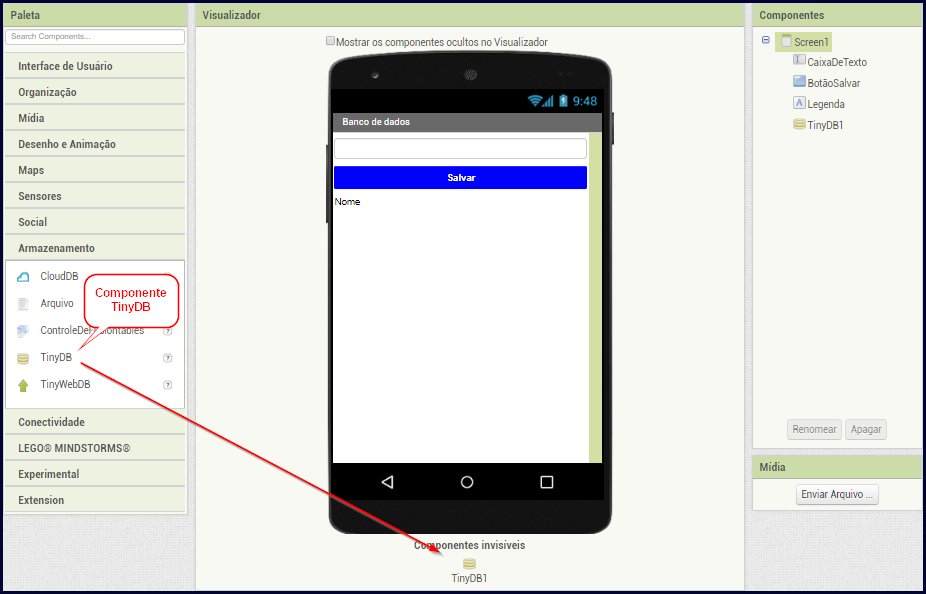
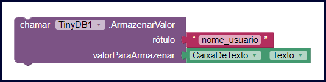
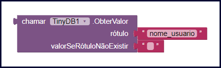
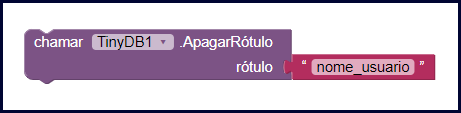

Nessa aula vamos aprender o que é e como podemos usar o banco de dados no App Inventor para conseguirmos gravar informações de maneira permanente em nossos aplicativos.
Você já ouviu a expressão? “Isso é como andar de bicicleta, depois que aprende nunca mais esquece”. Realmente tem algumas coisas que nós aprendemos e nunca mais esquecemos.
Ao desenvolver um aplicativo nós também precisamos fazer com que algumas informações sejam registradas na memória dele, de uma forma que ele não esqueça mais.
Até agora, utilizamos as variáveis para armazenar informações, no entanto a informação armazenada em uma variável é apagada quando fechamos o aplicativo.
Aplicando os bancos de dados podemos gravar informações de modo permanente no celular e usar essas informações a qualquer momento em nossos aplicativos. Vamos ver nesta aula os critérios de funcionamento e uso do banco de dados no App Inventor.
O objetivo principal ao utilizar o banco de dados é gravar informações de forma permanente em nossos aplicativos, ou seja, as informações gravadas em um banco de dados não são perdidas quando o aplicativo é fechado.
Todas as informações armazenadas no banco de dados podem ser consultadas a qualquer momento pelo seu aplicativo, além disso você pode aplicar filtros para consultar essas informações.
Pense que você criou um aplicativo de agenda, nele o usuário grava todos os compromissos de cada dia.
Agora o usuário quer ver apenas os compromissos agendados para amanhã, você pode fazer essa consulta no banco de dados utilizando um filtro para buscar apenas os compromissos de amanhã, assim seu aplicativo fica mais rápido e o usuário consegue as informações que ele deseja.
O banco de dados deve ser usado apenas quando as informações precisam ser gravadas e não podem ser perdidas, mesmo que o aplicativo seja fechado.
Imagine que você vai desenvolver um aplicativo de anotações, onde você quer fazer anotações e salvá-las para ler em outro momento.
Nesse caso, as anotações escritas devem ser armazenadas em um banco de dados, pois caso sejam armazenadas em uma variável, podem ser apagadas assim que o aplicativo for fechado.
Para poder utilizar o banco de dados no App Inventor você precisa primeiro adicionar ao seu aplicativo o componente chamado TinyDB, esse componente é o responsável por gravar, editar, excluir e buscar as informações no banco de dados.

Você encontra o componente TinyDB dentro do grupo de componentes chamado "Armazenamento", para adicioná-lo ao seu projeto apenas arraste-o até a tela do aplicativo. Em seguida, ele vai ficar aparecendo abaixo da tela de seu aplicativo no App Inventor na área dos componentes invisíveis.
O banco de dados no App Inventor funciona de forma muito semelhante às variáveis, a principal diferença é que o valor armazenado em uma variável é perdido quando o aplicativo for fechado, já no banco de dados as suas informações não são apagadas quando o aplicativo estiver fechado.
Nos tópicos abaixo, seguem informações sobre como trabalhar com o componente TinyDB para gravar, consultar, deletar e editar informações no banco de dados.
Para gravar uma informação no banco de dados você primeiro precisa informar um nome a ela, é esse mesmo nome que você usará para consultar a informação gravada futuramente.
Pense que você deseja gravar o nome do usuário do seu aplicativo no banco de dados, veja abaixo como poderíamos fazer isso no App Inventor utilizando o TinyDB.

Aqui nós chamamos o procedimento "ArmazenarValor" do componente TinyDB.
Ao lado da palavra "rótulo" colocamos o nome que vamos usar para identificar a informação que iremos gravar. Você pode imaginar o "rótulo" como sendo o nome de uma variável que vai armazenar sua informação no banco de dados.
Por fim, ao lado da palavra "valorParaArmazenar" colocamos o valor que desejamos guardar no banco de dados. Neste exemplo estamos armazenando o texto digitado em uma caixa de texto que está na tela.
Para consultar uma informação gravada no banco de dados precisamos saber qual é seu "rótulo", ou seja, qual é o nome que identifica essa informação no banco de dados.
Imagine que queremos consultar o nome do usuário que gravamos anteriormente, veja abaixo como podemos fazer isso no App Inventor.

Nesse bloco estamos chamando o procedimento "ObterValor" do componente TinyDB, esse procedimento vai retornar o valor armazenado no banco de dados de acordo com o rótulo passado.
Ao lado da palavra "rótulo" nós colocamos "nome_usuario" pois foi esse rótulo que usamos no momento de gravar o nome do usuário no banco de dados.
Em seguida, depois da palavra "valorSeRótuloNãoExistir" deixamos o bloco que representa um texto vazio, pois caso não exista um rótulo chamado "nome_usuario" o procedimento vai retornar apenas um texto vazio.
Agora você deseja excluir do banco de dados o nome do usuário que estava armazenado. Veja abaixo como faríamos isso no App Inventor.

No bloco acima, nós chamamos o procedimento "ApagarRótulo" do componente TinyDB. Ao lado da palavra "rótulo" nós informamos o nome do rótulo que desejamos deletar do banco de dados.
Agora digamos que você deseja alterar a informação que está gravada no rótulo "nome_usuario" do banco de dados, para isso basta usar o mesmo procedimento usado para salvar o "rótulo". Veja o exemplo abaixo.
Sempre que armazenamos uma informação em um "rótulo" que já existe, o App Inventor apenas altera o valor que estava armazenado antes no rótulo informado.
Nessa aula nós aprendemos como funciona e como usar o banco de dados no App Inventor.
Vimos que com o componente TinyDB do App Inventor conseguimos gravar, editar, consultar e excluir informações no banco de dados.
Na próxima aula vamos desenvolver um aplicativo de agenda para você poder usar na prática o banco de dados no App Inventor.
Caso você tenha ficado com dúvidas ou tenha alguma sugestão/pergunta envie uma mensagem para nós. Responderemos o mais rápido possível.
Até a próxima aula.
MACHADO, Germinaro. Componente TinyDB. Desenvolvendo com App Inventor, 2013. Disponível em: http://appinventordeveloper.blogspot.com/2013/03/componente-tinydb.html. Acesso em: 19 de outubro de 2019.
BARREIROS, Felipe. BANCO DE DADOS TINYDB. FIAP X, 2014. Disponível em: https://www.fiap.com.br/fiapx/cursos/desenvolvimento-android-com-appinventor/banco-de-dados-tinydb. Acesso em: 19 de outubro de 2019.
Massachusetts Institute of Technology. Storage - App Inventor for Android. MIT App Inventor, 2013. Disponível em: http://ai2.appinventor.mit.edu/reference/components/storage.html. Acesso em: 19 de outubro de 2019.